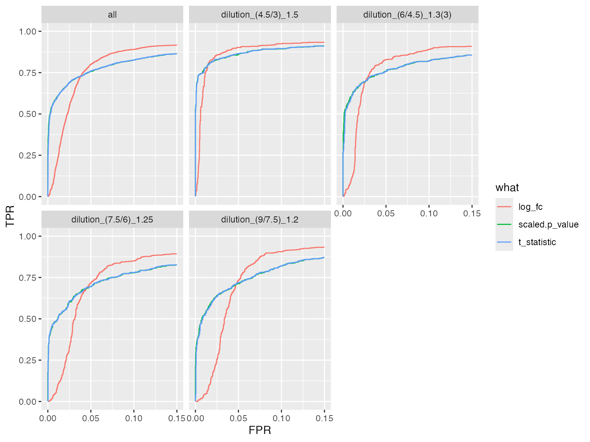
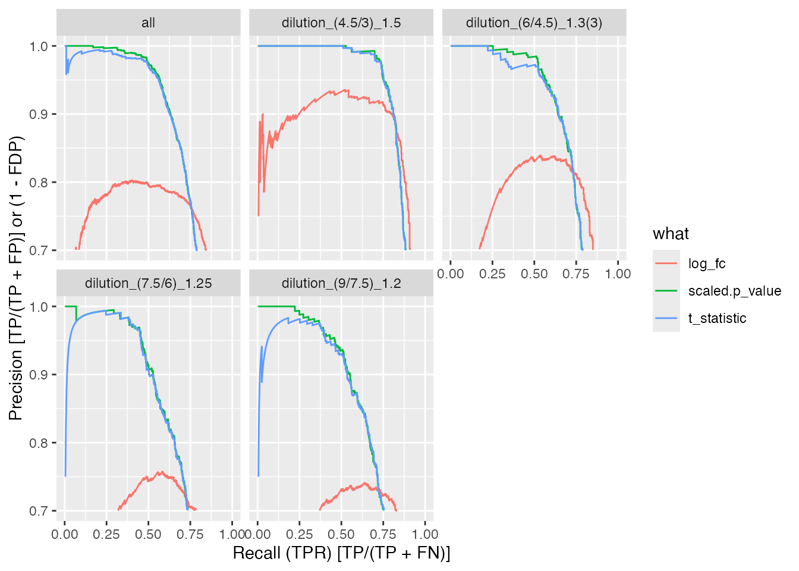
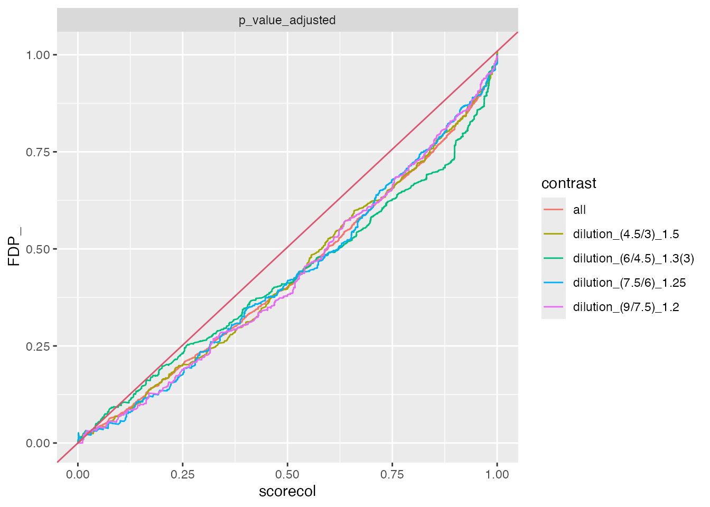
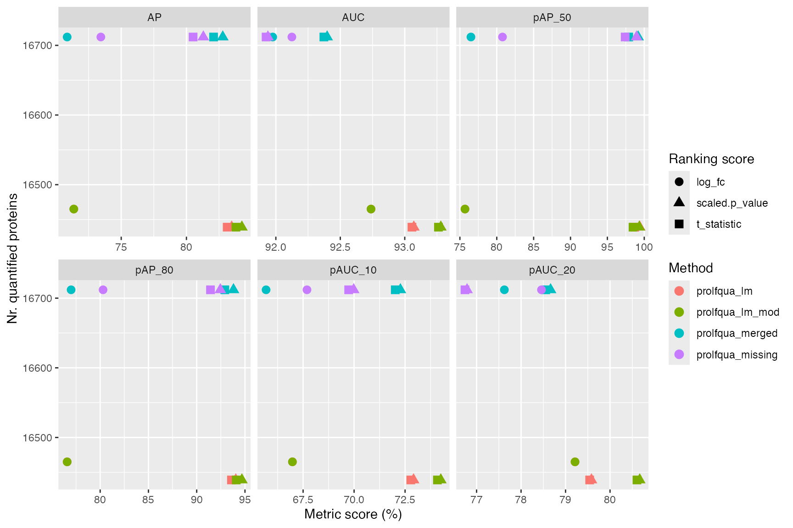
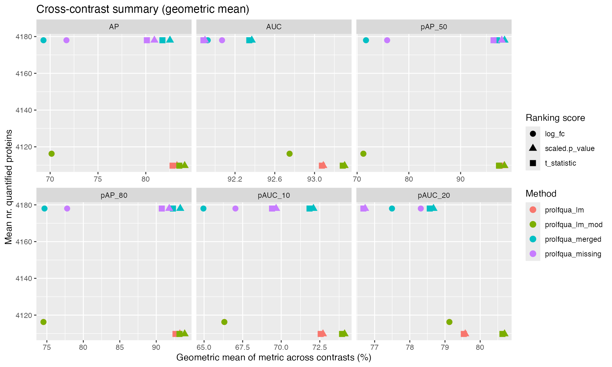

vignettes/Benchmark_pipeline_demo.Rmd
Benchmark_pipeline_demo.RmdThis vignette demonstrates the pipeline architecture for benchmarking. Instead of fitting models and benchmarking in one monolithic script, the workflow is split into three decoupled steps:
Each fitting step produces a directory with
contrasts.tsv + metadata.yaml. This enables a
future Snakemake pipeline:
for each dataset × method → fit → score → aggregate.
conflicted::conflict_prefer("filter", "dplyr")This section is identical to BenchmarkingIonstarData.Rmd
— load and normalize the IonStar dataset, aggregate peptides to proteins
via median polish.
datadir <- file.path(find.package("prolfquadata"), "quantdata")
inputMQfile <- file.path(datadir, "MAXQuant_IonStar2018_PXD003881.zip")
inputAnnotation <- file.path(datadir, "annotation_Ionstar2018_PXD003881.xlsx")
mqdata <- list()
mqdata$data <- prolfquapp::tidyMQ_Peptides(inputMQfile)
mqdata$config <- prolfqua::create_config_MQ_peptide()
annotation <- readxl::read_xlsx(inputAnnotation)
res <- dplyr::inner_join(mqdata$data, annotation, by = "raw.file")
mqdata$config$table$factors[["dilution."]] <- "sample"
mqdata$config$table$factors[["run_Id"]] <- "run_ID"
mqdata$config$table$factorDepth <- 1
mqdata$data <- prolfqua::setup_analysis(res, mqdata$config)
lfqdata <- prolfqua::LFQData$new(mqdata$data, mqdata$config)
lfqdata$data <- lfqdata$data |> dplyr::filter(!grepl("^REV__|^CON__", protein_Id))
lfqdata$filter_proteins_by_peptide_count()
lfqdata$remove_small_intensities()
# Normalize using HUMAN subset
tr <- lfqdata$get_Transformer()
subset_h <- lfqdata$get_copy()
subset_h$data <- subset_h$data |> dplyr::filter(grepl("HUMAN", protein_Id))
subset_h <- subset_h$get_Transformer()$log2()$lfq
lfqdataNormalized <- tr$log2()$robscale_subset(lfqsubset = subset_h, preserveMean = FALSE)$lfq
# Median polish aggregation
lfqAggMedpol <- lfqdataNormalized$get_Aggregator()
lfqAggMedpol$medpolish()
protLFQ <- lfqAggMedpol$lfq_agg
relevantContrasts <- c(
"dilution_(9/7.5)_1.2" = "dilution.e - dilution.d",
"dilution_(7.5/6)_1.25" = "dilution.d - dilution.c",
"dilution_(6/4.5)_1.3(3)" = "dilution.c - dilution.b",
"dilution_(4.5/3)_1.5" = "dilution.b - dilution.a"
)
output_base <- tempfile("benchmark_pipeline_")
dir.create(output_base)
message("Pipeline output directory: ", output_base)Each method fits models, computes contrasts, and writes the results
using write_contrast_results(). This produces a
contrasts.tsv + metadata.yaml per method.
lmmodel <- paste0(protLFQ$config$table$get_response(), " ~ dilution.")
modelFunction <- prolfqua::strategy_lm(lmmodel, model_name = "Model")
modLinearProt <- prolfqua::build_model(protLFQ$data, modelFunction)
contrProt <- prolfqua::Contrasts$new(modLinearProt, relevantContrasts)
contrast_data_lm <- contrProt$get_contrasts()
write_contrast_results(
data = contrast_data_lm,
path = file.path(output_base, "ionstar_lm"),
metadata = list(
dataset = "ionstar_maxquant",
method = "prolfqua_lm",
method_description = "Linear model on median-polished proteins",
input_file = "MAXQuant_IonStar2018_PXD003881.zip/peptides.txt",
aggregation = "median_polish",
normalization = "robscale",
software_version = paste0("prolfqua ", packageVersion("prolfqua")),
date = as.character(Sys.Date()),
contrasts = names(relevantContrasts),
ground_truth = list(
id_column = "protein_id",
positive = list(label = "ECOLI", pattern = "ECOLI"),
negative = list(label = "HUMAN", pattern = "HUMAN")
)
)
)
contrProtModerated <- prolfqua::ContrastsModerated$new(contrProt)
contrast_data_lm_mod <- contrProtModerated$get_contrasts()
write_contrast_results(
data = contrast_data_lm_mod,
path = file.path(output_base, "ionstar_lm_mod"),
metadata = list(
dataset = "ionstar_maxquant",
method = "prolfqua_lm_mod",
method_description = "Linear model with variance moderation on median-polished proteins",
input_file = "MAXQuant_IonStar2018_PXD003881.zip/peptides.txt",
aggregation = "median_polish",
normalization = "robscale",
software_version = paste0("prolfqua ", packageVersion("prolfqua")),
date = as.character(Sys.Date()),
contrasts = names(relevantContrasts),
ground_truth = list(
id_column = "protein_id",
positive = list(label = "ECOLI", pattern = "ECOLI"),
negative = list(label = "HUMAN", pattern = "HUMAN")
)
)
)
contrImp <- prolfqua::ContrastsMissing$new(protLFQ, relevantContrasts)
contrast_data_imp <- contrImp$get_contrasts()
write_contrast_results(
data = contrast_data_imp,
path = file.path(output_base, "ionstar_missing"),
metadata = list(
dataset = "ionstar_maxquant",
method = "prolfqua_missing",
method_description = "Median polish and missingness modelling",
input_file = "MAXQuant_IonStar2018_PXD003881.zip/peptides.txt",
aggregation = "median_polish",
normalization = "robscale",
software_version = paste0("prolfqua ", packageVersion("prolfqua")),
date = as.character(Sys.Date()),
contrasts = names(relevantContrasts),
ground_truth = list(
id_column = "protein_id",
positive = list(label = "ECOLI", pattern = "ECOLI"),
negative = list(label = "HUMAN", pattern = "HUMAN")
)
)
)
all_merged <- prolfqua::merge_contrasts_results(prefer = contrProt, add = contrImp)
merged_mod <- prolfqua::ContrastsModerated$new(all_merged$merged)
contrast_data_merged <- merged_mod$get_contrasts()
write_contrast_results(
data = contrast_data_merged,
path = file.path(output_base, "ionstar_merged"),
metadata = list(
dataset = "ionstar_maxquant",
method = "prolfqua_merged",
method_description = "Merge of lm moderated and imputed contrasts",
input_file = "MAXQuant_IonStar2018_PXD003881.zip/peptides.txt",
aggregation = "median_polish",
normalization = "robscale",
software_version = paste0("prolfqua ", packageVersion("prolfqua")),
date = as.character(Sys.Date()),
contrasts = names(relevantContrasts),
ground_truth = list(
id_column = "protein_id",
positive = list(label = "ECOLI", pattern = "ECOLI"),
negative = list(label = "HUMAN", pattern = "HUMAN")
)
)
)
list.files(output_base, recursive = TRUE)## [1] "ionstar_lm_mod/contrasts.tsv" "ionstar_lm_mod/metadata.yaml"
## [3] "ionstar_lm/contrasts.tsv" "ionstar_lm/metadata.yaml"
## [5] "ionstar_merged/contrasts.tsv" "ionstar_merged/metadata.yaml"
## [7] "ionstar_missing/contrasts.tsv" "ionstar_missing/metadata.yaml"
lm_data <- utils::read.delim(
file.path(output_base, "ionstar_lm", "contrasts.tsv"),
nrows = 5
)
knitr::kable(lm_data, caption = "First 5 rows of ionstar_lm/contrasts.tsv")| modelName | protein_id | contrast | sigma | df | log_fc | p_value_adjusted | std.error | t_statistic | p_value | conf.low | conf.high | avgAbd |
|---|---|---|---|---|---|---|---|---|---|---|---|---|
| WaldTest | sp|A0AVT1|UBA6_HUMAN | dilution_(9/7.5)_1.2 | 0.1350528 | 15 | -0.0525662 | 0.9440215 | 0.0954967 | -0.5504504 | 0.5901146 | -0.2561127 | 0.1509803 | -1.3494300 |
| WaldTest | sp|A0AVT1|UBA6_HUMAN | dilution_(7.5/6)_1.25 | 0.1350528 | 15 | -0.0902570 | 0.8752505 | 0.0954967 | -0.9451316 | 0.3595683 | -0.2938035 | 0.1132895 | -1.2780184 |
| WaldTest | sp|A0AVT1|UBA6_HUMAN | dilution_(6/4.5)_1.3(3) | 0.1350528 | 15 | -0.0494793 | 0.9647062 | 0.0954967 | -0.5181250 | 0.6119287 | -0.2530257 | 0.1540672 | -1.2081503 |
| WaldTest | sp|A0AVT1|UBA6_HUMAN | dilution_(4.5/3)_1.5 | 0.1350528 | 15 | 0.0837284 | 0.8888834 | 0.0954967 | 0.8767667 | 0.3944387 | -0.1198181 | 0.2872748 | -1.2252748 |
| WaldTest | sp|A0FGR8|ESYT2_HUMAN | dilution_(9/7.5)_1.2 | 0.0854070 | 15 | -0.0533352 | 0.8725464 | 0.0603918 | -0.8831531 | 0.3910883 | -0.1820574 | 0.0753869 | -0.3097215 |
## dataset: ionstar_maxquant
## method: prolfqua_lm
## method_description: Linear model on median-polished proteins
## input_file: MAXQuant_IonStar2018_PXD003881.zip/peptides.txt
## aggregation: median_polish
## normalization: robscale
## software_version: prolfqua 1.5.0
## date: '2026-03-19'
## contrasts:
## - dilution_(9/7.5)_1.2
## - dilution_(7.5/6)_1.25
## - dilution_(6/4.5)_1.3(3)
## - dilution_(4.5/3)_1.5
## ground_truth:
## id_column: protein_id
## positive:
## label: ECOLI
## pattern: ECOLI
## negative:
## label: HUMAN
## pattern: HUMANLoad each contrast result directory with
benchmark_from_file() and compute benchmark metrics. No
knowledge of the fitting step is needed — the ground truth specification
comes from metadata.yaml.
method_dirs <- list.dirs(output_base, recursive = FALSE)
names(method_dirs) <- basename(method_dirs)
benchmarks <- lapply(method_dirs, benchmark_from_file)
benchmarks$ionstar_lm$plot_ROC(xlim = 0.15)
benchmarks$ionstar_lm_mod$plot_precision_recall()
benchmarks$ionstar_merged$plot_FDRvsFDP()
Use to_summary_table() to extract metrics from each
Benchmark, then combine with collect_benchmark_results()
for cross-method comparison.
summary_files <- character()
for (method_name in names(benchmarks)) {
bench <- benchmarks[[method_name]]
bench$complete(FALSE)
summary <- bench$to_summary_table(dataset = "ionstar_maxquant")
outfile <- file.path(output_base, method_name, "benchmark_results.tsv")
write_benchmark_results(summary, outfile)
summary_files <- c(summary_files, outfile)
}
combined <- collect_benchmark_results(summary_files)
knitr::kable(
combined |> dplyr::filter(contrast == "all"),
caption = "Benchmark summary across methods (all contrasts pooled)",
digits = 2
)| model_name | model_description | dataset | contrast | score | AUC | pAUC_10 | pAUC_20 | AP | pAP_50 | pAP_80 | n_TP | n_TN | n_total | n_missing_contrasts |
|---|---|---|---|---|---|---|---|---|---|---|---|---|---|---|
| prolfqua_lm | Linear model on median-polished proteins | ionstar_maxquant | all | log_fc | 92.74 | 66.98 | 79.21 | 71.37 | 75.69 | 76.58 | 2484 | 13981 | 16465 | 123 |
| prolfqua_lm | Linear model on median-polished proteins | ionstar_maxquant | all | scaled.p_value | 93.07 | 72.92 | 79.58 | 83.47 | 99.39 | 94.05 | 2484 | 13955 | 16439 | 123 |
| prolfqua_lm | Linear model on median-polished proteins | ionstar_maxquant | all | t_statistic | 93.06 | 72.78 | 79.54 | 83.12 | 98.72 | 93.60 | 2484 | 13955 | 16439 | 123 |
| prolfqua_lm_mod | Linear model with variance moderation on median-polished proteins | ionstar_maxquant | all | log_fc | 92.74 | 66.98 | 79.21 | 71.37 | 75.69 | 76.58 | 2484 | 13981 | 16465 | 123 |
| prolfqua_lm_mod | Linear model with variance moderation on median-polished proteins | ionstar_maxquant | all | scaled.p_value | 93.28 | 74.25 | 80.67 | 84.25 | 99.33 | 94.68 | 2484 | 13955 | 16439 | 123 |
| prolfqua_lm_mod | Linear model with variance moderation on median-polished proteins | ionstar_maxquant | all | t_statistic | 93.26 | 74.09 | 80.61 | 83.80 | 98.48 | 94.10 | 2484 | 13955 | 16439 | 123 |
| prolfqua_merged | Merge of lm moderated and imputed contrasts | ionstar_maxquant | all | log_fc | 91.98 | 65.68 | 77.62 | 70.86 | 76.50 | 76.99 | 2564 | 14148 | 16712 | 0 |
| prolfqua_merged | Merge of lm moderated and imputed contrasts | ionstar_maxquant | all | scaled.p_value | 92.40 | 72.27 | 78.66 | 82.79 | 99.17 | 93.81 | 2564 | 14148 | 16712 | 0 |
| prolfqua_merged | Merge of lm moderated and imputed contrasts | ionstar_maxquant | all | t_statistic | 92.37 | 72.02 | 78.55 | 82.08 | 97.89 | 92.91 | 2564 | 14148 | 16712 | 0 |
| prolfqua_missing | Median polish and missingness modelling | ionstar_maxquant | all | log_fc | 92.12 | 67.69 | 78.46 | 73.44 | 80.78 | 80.30 | 2564 | 14148 | 16712 | 0 |
| prolfqua_missing | Median polish and missingness modelling | ionstar_maxquant | all | scaled.p_value | 91.94 | 69.98 | 76.79 | 81.30 | 98.96 | 92.45 | 2564 | 14148 | 16712 | 0 |
| prolfqua_missing | Median polish and missingness modelling | ionstar_maxquant | all | t_statistic | 91.92 | 69.73 | 76.74 | 80.51 | 97.41 | 91.43 | 2564 | 14148 | 16712 | 0 |
combined_all <- combined |> dplyr::filter(contrast == "all")
long <- tidyr::pivot_longer(
combined_all,
cols = c("AUC", "pAUC_10", "pAUC_20", "AP", "pAP_50", "pAP_80"),
names_to = "metric",
values_to = "value"
)
ggplot2::ggplot(
long,
ggplot2::aes(x = value, y = n_total, color = model_name, shape = score)
) +
ggplot2::geom_point(size = 3) +
ggplot2::facet_wrap(~metric, scales = "free_x") +
ggplot2::labs(
x = "Metric score (%)", y = "Nr. quantified proteins",
color = "Method", shape = "Ranking score"
)
# Geometric mean across contrasts — complements the pooled "all" row above
summary_list <- lapply(benchmarks, function(b) {
b$complete(FALSE)
b$summary_metrics()
})
combined_summary <- dplyr::bind_rows(summary_list)
long_summary <- tidyr::pivot_longer(
combined_summary,
cols = c("AUC", "pAUC_10", "pAUC_20", "AP", "pAP_50", "pAP_80"),
names_to = "metric",
values_to = "value"
)
ggplot2::ggplot(
long_summary,
ggplot2::aes(x = value, y = n_total, color = model_name, shape = score)
) +
ggplot2::geom_point(size = 3) +
ggplot2::facet_wrap(~metric, scales = "free_x") +
ggplot2::labs(
x = "Geometric mean of metric across contrasts (%)",
y = "Mean nr. quantified proteins",
color = "Method", shape = "Ranking score",
title = "Cross-contrast summary (geometric mean)"
)
Verify that the file-based pipeline produces the same AUC values as the direct (in-memory) path used in the original vignette.
# Direct path (as in BenchmarkingIonstarData.Rmd)
ttd_direct <- ionstar_bench_preprocess(contrast_data_lm)
bench_direct <- make_benchmark(
ttd_direct$data,
model_description = "med. polish and lm",
model_name = "prolfqua_lm"
)
pauc_direct <- bench_direct$pAUC()
# File-based path
pauc_file <- benchmarks$ionstar_lm$pAUC()
# Compare — AUC and AP values should be identical
comparison <- dplyr::inner_join(
pauc_direct |> dplyr::select(contrast, what, AUC_direct = AUC,
pAUC_10_direct = pAUC_10,
AP_direct = AP),
pauc_file |> dplyr::select(contrast, what, AUC_file = AUC,
pAUC_10_file = pAUC_10,
AP_file = AP),
by = c("contrast", "what")
)
comparison$AUC_match <- abs(comparison$AUC_direct - comparison$AUC_file) < 0.01
comparison$pAUC_10_match <- abs(comparison$pAUC_10_direct - comparison$pAUC_10_file) < 0.01
comparison$AP_match <- abs(comparison$AP_direct - comparison$AP_file) < 0.01
knitr::kable(comparison, caption = "Round-trip validation: direct vs file-based AUC and AP", digits = 3)| contrast | what | AUC_direct | pAUC_10_direct | AP_direct | AUC_file | pAUC_10_file | AP_file | AUC_match | pAUC_10_match | AP_match |
|---|
The pipeline architecture decouples fitting from scoring:
write_contrast_results() serializes
contrast results + metadata to contrasts.tsv +
metadata.yaml
benchmark_from_file() loads results,
applies ground truth annotation from metadata, creates a
Benchmark objectto_summary_table() extracts AUC
metrics into a flat tablecollect_benchmark_results() combines
summaries across methodsThis enables:
contrasts.tsv + metadata.yaml)